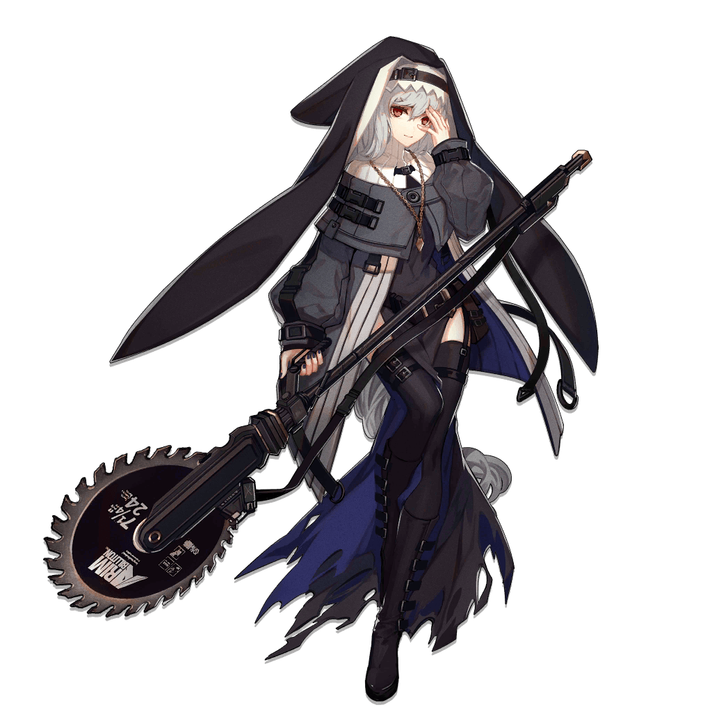
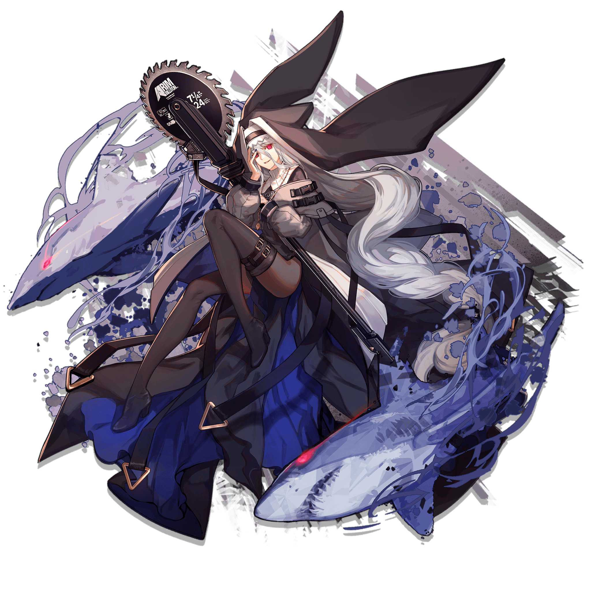
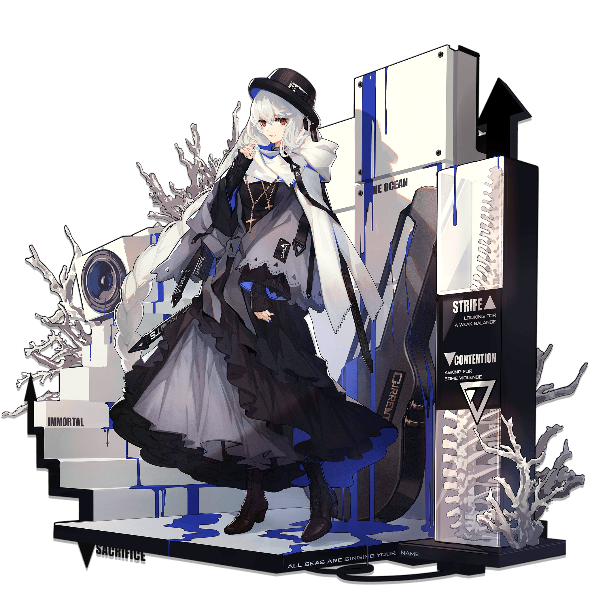

这是鲨鲨，她很可爱。
【代号】幽灵鲨
【性别】女
【战斗经验】七年
【出身地】阿戈尔
【生日】7月27日
【种族】未公开
【身高】162cm
【体重】未公开
【矿石病感染情况】
体表无源石结晶分布，但参照医学检测报告，确认为感染者。
干员幽灵鲨的感染症状较为特殊，需要进行进一步的临床研究。
幽灵鲨，身份不明，履历缺失。在对抗大型生物与破坏硬目标等行动中展现出极强的技巧，推测与其过往战斗经验相关。
现作为近卫干员于罗德岛某作战小队任职。
造影检测结果显示，该干员体内脏器轮廓模糊，可见异常阴影，循环系统内源石颗粒检测异常，有矿石病感染迹象，现阶段可确认为矿石病感染者。
【体细胞与源石融合率】14%
虽然干员幽灵鲨体表并未生成源石结晶，但与表征相反，她的神经系统受到了相当严重的感染。目前还无法探明产生此种症状的原因。
【血液源石结晶密度】0.31u/L
尚属可控范围内。尽管如此，若无法解析干员幽灵鲨的具体病因，检测数据会因不能准确反应病征而失去意义。
另外，干员幽灵鲨患有严重的精神障碍，可能包含并不止于记忆障碍、情感障碍与认知障碍。我不是精神科医生，无法推断具体病因呈器质性或功能性，但依然希望能将心理状况纳入资料记录。
——医疗干员赫默
对干员幽灵鲨进行的调查进展艰难。在罗德岛接收干员幽灵鲨时，她也曾表现出片刻的清醒，但在罗德岛医治她之前，干员幽灵鲨便陷入了严重的精神失常。在日常生活中，干员幽灵鲨的精神状态缺乏稳定，这使得她与其他干员的接触较为稀少。
罗德岛医疗部门会定期对干员幽灵鲨进行检查和治疗，迄今为止，效果较为有限。
依据罗德岛多方搜集的信息推断，干员幽灵鲨曾是隶属某教会的修女。之后，鉴于干员幽灵鲨现在的精神状态与罗德岛的现行方针，罗德岛没有对她进行更多的调查。
不过，依照凯尔希医生的推测，干员幽灵鲨的过去和此教会息息相关，并且可能存在着与现存证据相悖的事实真相。
在医疗部门的深入检查中，医疗干员发现，干员幽灵鲨的身体机能因受到源石感染而大幅退化。
另一方面，干员幽灵鲨缺少运用源石技艺所必要的天赋，也缺乏应对源石技艺的必要知识。尽管十分蹊跷，但这确实影响着干员幽灵鲨的作战能力。
即便是处在如此不利的情况之下，干员幽灵鲨于执行任务时所展现的攻坚能力与破坏力依然令人惊奇，甚至……使人感到困扰。她的个人能力，毋庸置疑，是极其罕见的。
更重要的是，干员幽灵鲨在战斗中表现出的态度与其日常生活中的姿态截然相反。
战场之上的幽灵鲨顺从且安静，除了偶尔的喃喃自语之外，干员幽灵鲨会坚决地实现一切命令，完全无视任何阻挠与障碍，这甚至导致了她战场应变能力的匮乏，进而陷入危险。
由此判断，干员幽灵鲨对于小队而言十分重要，然而，该干员的运用方针也同样需要战术指挥官的进一步调整与权衡。
【权限记录】
实际上，干员幽灵鲨在被罗德岛接收时，语言得体，语气诚恳，她声称自己刚刚逃离囚禁，并要向罗德岛传达一条信息。
然而，幽灵鲨尚未将信息表达完全便逐渐陷入了沉默。在干员幽灵鲨精神状态尚维持在正常水平的最后一刻，幽灵鲨向罗德岛负责接收的干员表示，自己可能要再次坠入阴谋者所设计的黑暗之中了。
撕扯身上的修女服未果之后，干员幽灵鲨精神崩溃。
《他乡的歌谣》
当她祈祷
星星停止闪烁
当她流泪
夜晚露出微笑
当她悲叹
痛苦蔓延在她的疯狂
——记载于干员幽灵鲨的个人物品
初始

精英化阶段二

暗流
